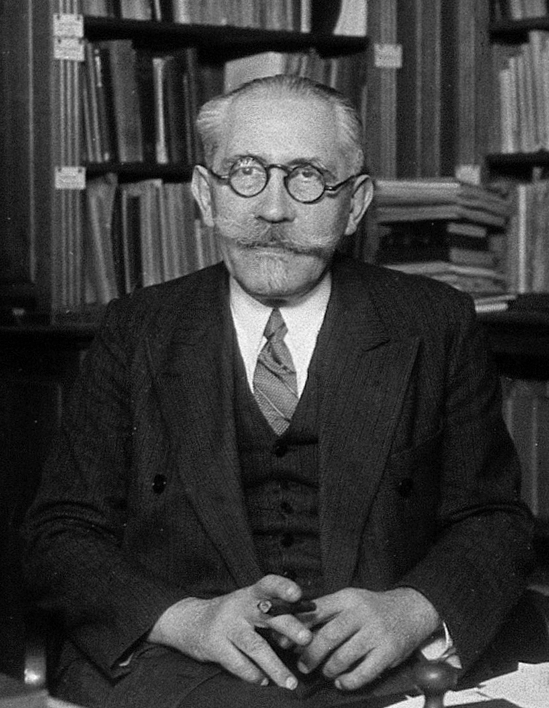

The usual recipe for Langevin sampling is to follow the negative gradient of a potential and add Brownian noise. The gradient pulls particles towards low energy; the noise prevents them from collapsing to a minimizer. Their balance produces a Gibbs distribution.
But a vector field does not have to be a gradient. Can a swirling, nongradient dynamics still settle into an equilibrium? Yes—and the distinction is instructive: confinement produces an invariant distribution, whereas reversibility is an additional property. A stationary distribution can carry a permanent probability current.

A diffusion and its probability current
Fix a noise strength \(\varepsilon>0\), a smooth vector field \(v:\mathbb R^d\to\mathbb R^d\), and a standard Brownian motion \(B_t\). Our sign convention is
\[ dX_t=-v(X_t)\,dt+\sqrt{2\varepsilon}\,dB_t. \]The deterministic velocity is minus \(v\). Smoothness gives a unique solution up to a possible explosion time; a confinement condition will rule explosion out. The generator and the density equation are
\[ \mathcal L\varphi=\varepsilon\Delta\varphi-v\cdot\nabla\varphi, \qquad \partial_t\rho=\varepsilon\Delta\rho+\nabla\cdot(v\rho). \]Writing the second equation as a conservation law identifies the current:
\[ \partial_t\rho+\nabla\cdot j=0, \qquad j=-v\rho-\varepsilon\nabla\rho. \]Stationarity asks only for \(\nabla\cdot j_\infty=0\): whatever enters a region must leave it. Detailed balance asks for the stronger condition \(j_\infty=0\). In this uniformly elliptic setting, that is the reversible case [1].
What the potential does—and does not—guarantee
If \(v=\nabla f\), a natural candidate is
\[ \rho_\infty=Z_\varepsilon^{-1}e^{-f/\varepsilon}, \qquad Z_\varepsilon=\int_{\mathbb R^d}e^{-f(x)/\varepsilon}\,dx. \]Its current vanishes because \(\varepsilon\nabla\rho_\infty=-\rho_\infty\nabla f\). If \(Z_\varepsilon\) is finite and the diffusion is nonexplosive, this is indeed an invariant probability. Smooth, nondegenerate noise then gives uniqueness and convergence in total variation; these facts alone do not specify an exponential rate [1], [2].
The normalization is not a formality. Even \(f(x)\to+\infty\) is insufficient: in one dimension,
\[ f(x)=\frac{\varepsilon}{2}\log(1+x^2) \quad\Longrightarrow\quad e^{-f(x)/\varepsilon}=\frac1{\sqrt{1+x^2}}, \]which has infinite integral. At a fixed temperature, a lower bound \(f(x)\ge(d+\delta)\varepsilon\log(1+|x|)-C\), with \(\delta>0\), guarantees integrability. One must still check that the diffusion does not explode.
Confinement without a gradient
A Lyapunov function measures how hard it is for a particle to escape. The simplest choice is \(W(x)=1+|x|^2\), for which
\[ \mathcal LW(x)=2\varepsilon d-2x\cdot v(x). \]Proposition 1 (a radial sufficient condition). Suppose \(v\) is smooth and \(x\cdot v(x)\to+\infty\) as \(|x|\to\infty\). The diffusion is nonexplosive and has a unique invariant probability \(\pi\). From every initial point, its transition law converges to \(\pi\) in total variation.
Proof: a tightness estimate and the role of noise
The radial assumption makes \(\mathcal LW\) bounded above and tending to \(-\infty\). Thus, for some constant \(C\) and continuous \(\Psi\ge0\) tending to infinity, \(\mathcal LW\le C-\Psi\). Applying Itô’s formula up to exit times from large balls first shows nonexplosion: \(W\) cannot reach arbitrarily large values in finite time with positive probability. Localization and Fatou’s lemma then give
\[ \frac1T\int_0^T\mathbb E_x[\Psi(X_t)]\,dt \le C+\frac{W(x)}T. \]Consequently, the time-averaged laws are tight. A weak limit is invariant by the Feller property and the usual time-averaging argument. Smooth, nondegenerate additive noise makes the diffusion strong Feller and irreducible; compact sets provide the local mixing condition. The positive-recurrence/Harris theorem then gives uniqueness and total-variation convergence [2]. The compactness estimate is elementary; the final Markov-process theorem is the standard ingredient used here. \(\square\)
A stronger estimate \(x\cdot v(x)\ge a|x|^2-b\), with \(a>0\), gives \(\mathcal LW\le-2aW+C\). Harris’ geometric-drift theorem then supplies constants \(C_0,\kappa>0\) such that
\[ \|P_t(x,\cdot)-\pi\|_{\mathrm{TV}} \le C_0(1+|x|^2)e^{-\kappa t}. \]These conditions are sufficient, not necessary. They constrain the inward component, not the tangential one. A large swirl can be perfectly compatible with confinement. A better adapted, nonradial Lyapunov function may also succeed when the radial test fails.
The linear case is completely explicit
Take \(v(x)=A(x-m_*)\), with a real matrix \(A\). It need not be symmetric. We call the drift stable when every eigenvalue of \(A\) has positive real part—so that \(e^{-At}\to0\).
Theorem 1 (the noisy linear criterion). For \(\varepsilon>0\), an invariant probability exists if and only if the drift is stable. It is then unique and equals \(\mathcal N(m_*,\Sigma_*)\), where
\[ \Sigma_*=2\varepsilon\int_0^\infty e^{-As}e^{-A^\top s}\,ds, \qquad A\Sigma_*+\Sigma_*A^\top=2\varepsilon I. \]The stationary covariance is positive definite. Transition laws converge to this Gaussian in total variation from every initial law, without a moment assumption.
Proof: solve the linear equation, then exclude unstable directions
Sufficiency. The integrating-factor formula is
\[ X_t-m_*=e^{-At}(X_0-m_*)+\xi_t, \qquad \xi_t\sim\mathcal N(0,Q_t), \] \[ Q_t=2\varepsilon\int_0^t e^{-As}e^{-A^\top s}\,ds, \]with \(\xi_t\) independent of \(X_0\). Stability gives \(Q_t\to\Sigma_*\succ0\). Differentiating the integrand gives the Lyapunov equation. If \(X_0\) has the candidate stationary Gaussian law, its mean and covariance stay unchanged, proving invariance. From any fixed starting point the Gaussian transition densities converge in total variation; integrating their bounded total-variation errors against an arbitrary initial law proves the same assertion for that law. This also gives uniqueness.
Necessity, without assuming finite covariance. The characteristic function \(\widehat\pi\) of any invariant law centered at \(m_*\) would satisfy
\[ \widehat\pi(\xi)=\widehat\pi(e^{-A^\top t}\xi) \exp\left(-\varepsilon\int_0^t |e^{-A^\top s}\xi|^2\,ds\right). \]If \(A\) has an eigenvalue with nonpositive real part, its transpose has a real one- or two-dimensional invariant eigenspace with a nonzero vector \(\xi\) for which the integral diverges. For a real eigenvalue this is immediate; for a complex pair the rotation has bounded condition number and its norm has the same nondecaying exponential factor. Since characteristic functions have modulus at most one, the identity forces \(\widehat\pi(r\xi)=0\) for every nonzero real \(r\). This contradicts continuity at the origin. \(\square\)
The symmetric part of \(A\) need not be positive definite. For instance, \(A=\begin{pmatrix}1&4\\0&2\end{pmatrix}\) is stable although its symmetric part has a negative eigenvalue. The right Lyapunov function is then not necessarily \(|x|^2\): the positive matrix
\[ M=\int_0^\infty e^{-A^\top t}e^{-At}\,dt \quad\text{satisfies}\quad A^\top M+MA=I. \]Thus \(W(x)=1+(x-m_*)^\top M(x-m_*)\) has \(\mathcal LW=2\varepsilon\operatorname{tr}M-|x-m_*|^2\).
Covariance, convergence, and circulation
For any initial law with a finite second moment, mean and covariance obey
\[ \dot m_t=-A(m_t-m_*), \qquad \dot\Sigma_t=-A\Sigma_t-\Sigma_tA^\top+2\varepsilon I. \]When \(A\) is symmetric positive definite, \(\Sigma_*=\varepsilon A^{-1}\). In the nonsymmetric case, replacing the Lyapunov equation by this formula would be wrong.
A closed covariance formula when A is diagonalizable
If \(A=V\Lambda V^{-1}\) over \(\mathbb C\), write \(\Sigma_*=VCV^*\). Multiplying the Lyapunov equation on the left by \(V^{-1}\) and on the right by \(V^{-*}\) gives entrywise
\[ C_{ij}=\frac{2\varepsilon(V^{-1}V^{-*})_{ij}} {\lambda_i+\overline{\lambda_j}}. \]Here \(*\) denotes conjugate transpose. Stability makes every denominator nonzero; the result is real because it equals the real integral in Theorem 1. This is not an orthogonal diagonalization of a nonsymmetric matrix. The integral formula also covers defective matrices.
Synchronous coupling—using the same Brownian path for two solutions—makes their difference exactly \(e^{-At}(X_0-Y_0)\). Consequently, for finite-second-moment initial laws,
\[ W_2(\mu P_t,\pi) \le\|e^{-At}\|_{2\to2}W_2(\mu,\pi). \]The matrix exponential has an exponentially decaying bound, but can initially amplify some directions when \(A\) is nonnormal. An asymptotic rate and a finite-time prefactor are different matters [3].
Here is a two-dimensional family that isolates circulation. Set
\[ S=\begin{pmatrix}1&0\\0&1/4\end{pmatrix}, \qquad J=\begin{pmatrix}0&-1\\1&0\end{pmatrix}, \qquad A_a=(I+aJ)S^{-1}. \]Proposition 2 (same equilibrium, different motion). For every real \(a\), the drift is stable and \(\Sigma_*=\varepsilon S\). The stationary current is
\[ j_\infty(x)=-aJS^{-1}(x-m_*)\rho_\infty(x). \]Proof: skew symmetry cancels in the covariance equation
Direct multiplication gives \(A_aS+SA_a^\top=2I\). Moreover \(A_a\) is similar to \(S^{-1/2}(I+aJ)S^{-1/2}\), whose symmetric part is the positive-definite matrix \(S^{-1}\); hence its eigenvalues have positive real part. Theorem 1 identifies the invariant Gaussian. Since \(\varepsilon\nabla\rho_\infty=-S^{-1}(x-m_*)\rho_\infty\), substitution into the current formula proves the result. Its divergence is zero: \(\operatorname{tr}(JS^{-1})=0\), and \(z^\top Jz=0\) for \(z=S^{-1}(x-m_*)\). \(\square\)
At \(a=0\), the current vanishes. Away from zero, particles keep circulating while their density stays fixed. This is a simple instance of nonreversible sampling, studied systematically in [3]–[5]. It does not mean every measure of sampling efficiency improves monotonically with \(|a|\).
Numerical experimentation
The experiment uses the exact Ornstein–Uhlenbeck transition, not an unstable Euler approximation. Changing circulation leaves the stationary covariance fixed at a given noise level; changing the noise changes the target cloud itself.
The zero-noise endpoint deserves its own interpretation: \(\delta_{m_*}\) is invariant for every matrix \(A\), stable or not. Thus Theorem 1 genuinely uses \(\varepsilon>0\). Under a stable drift, the deterministic law converges weakly to that point mass, not generally in total variation.
Bibliography
- Grigorios A. Pavliotis. Stochastic Processes and Applications: Diffusion Processes, the Fokker–Planck and Langevin Equations. Springer, 2014. Author manuscript.
- Martin Hairer. Convergence of Markov Processes. Lecture notes, 2021. Author’s notes.
- Tony Lelièvre, Francis Nier, and Grigorios A. Pavliotis. Optimal non-reversible linear drift for the convergence to equilibrium of a diffusion. Journal of Statistical Physics 152, 237–274, 2013. Paper.
- Claude Godrèche and Jean-Marc Luck. Characterising the nonequilibrium stationary states of Ornstein–Uhlenbeck processes. Journal of Physics A: Mathematical and Theoretical 52, 035002, 2019. Paper.
- Andrew B. Duncan, Tony Lelièvre, and Grigorios A. Pavliotis. Variance Reduction Using Nonreversible Langevin Samplers. Journal of Statistical Physics 163, 457–491, 2016. Author manuscript.